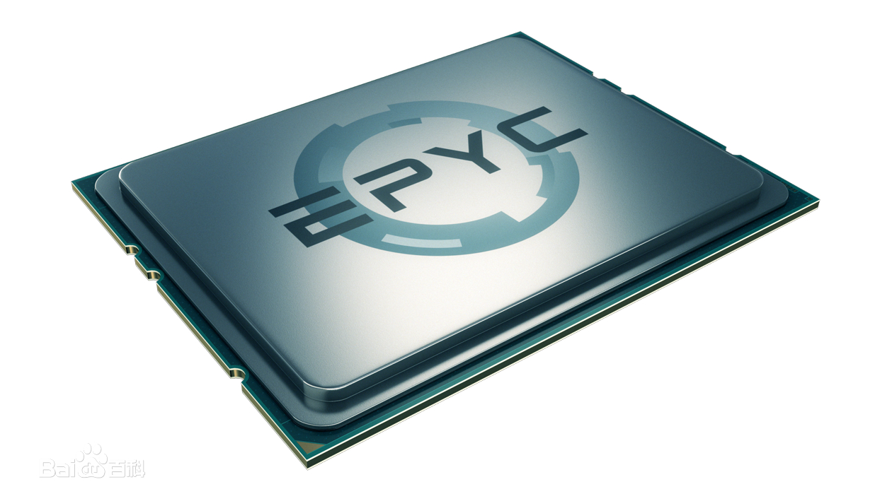

AMD正式发布了全新的服务器处理器EPYC，中文名定为“霄龙”。 2019年8月8日，AMD公司在旧金山召开新品发布会，发布了第二代 AMD EPYC （霄龙）系列处理。
EPYC和消费级的Ryzen一样基于Zen新架构，但针对服务器、数据中心等高性能计算做了针对性的加强和优化设计，尤其是注重性能(业界领先的性能/超多核心内存与IO)、优化(资源平衡适合各种计算负载)、安全(行业第一个x86芯片级淑娟前)三个方面。
AMD EPYC 采用创记录的创新设计，搭载最多32颗高性能Zen核心。为了能够快速达成更多核心规模，EPYC采取了特殊的设计方式，在一块芯片内、一块基板上，并排放置最多四颗芯片，每颗芯片内部为8核心，总计就达到了32核心，这样还能大大提高产品的良品率。

AMD在SC19上带来从超级计算机到云端HPC的超强性能
万众一芯 推动高性能产品创新 AMD大中华区合作伙伴峰会展示全新生态系统
第二代AMD EPYC处理器正式登陆大中华区市场 AMD与产业链合作伙伴携手共创数据中心新未来
第二代AMD EPYC处理器荣获CCF HPC China 2019 产品创新奖
第二代 AMD EPYC处理器以创纪录的高性能与大幅减少的TCO设定数据中心新标准
AMD 霄龙处理器、AMD Radeon Instinct 计算卡和 ROCm 开源软件为橡树岭国家实验室世界上最快的超级计算机提供动力
HOSTKEY部署AMD霄龙处理器以满足客户在虚拟化、HPC和并行工作负载中的高性能需求
NTT DATA通过部署AMD霄龙处理器提升其金融系统性能
抓住机遇，携手同芯！AMD大中华区合作伙伴峰会成功召开
AMD宣布EPYC（霄龙）处理器现已登陆AWS
AMD推动高性能数据中心计算迈进新世代
AMD 和Oracle合作推出基于AMD EPYC(霄龙)处理器的云服务
AMD 携手新华三发布基于霄龙处理器的服务器新品